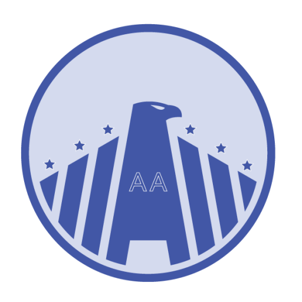

SEPI
A federation layer that would surface authoritative status from systems of record and point back to those systems rather than holding records itself. It does not exist yet. This site runs against a simulated SEPI.

Coordination view
Systems used on this prototype, and the terms and acronyms spelled out.
What each named system is, and how this prototype uses it. Lease and well records from MLRS and AFMSS are simulated. Everything else is a public federal source or a published extract.
This prototype
A federation layer that would surface authoritative status from systems of record and point back to those systems rather than holding records itself. It does not exist yet. This site runs against a simulated SEPI.
A coordination layer that consumes SEPI and other services to produce a view no single source system holds. This prototype is one GPCP capability: which reviews are required, who runs each one, what blocks what, and how long the sequence runs.
The interface used to wrap each source as a local read-only server with typed tools. Each response carries its source name, endpoint, and retrieval timestamp. A static host cannot run those servers; this site publishes what they produced.
| Server | What it wraps |
|---|---|
ecfr | eCFR and Federal Register public APIs |
ipac | USFWS IPaC Location API |
sepi-stub | Simulated BLM MLRS and AFMSS response shapes |
gpcp-timeline | Encoded dependency rule set and critical-path schedule |
Federal systems and datasets
BLM system of record for well records and Application for Permit to Drill status. No public machine interface. Represented here by a simulated response shape, marked Simulated.
Public website for NEPA documents and project dockets. The underlying platform can expose a Web API; that API is not enabled. Not connected here.
BLM system of record for lease serial, status, acreage, and administrative office. Sits behind DOI network boundaries. Represented here by a simulated response shape, marked Simulated.
Census Bureau geospatial service. Used here for federal American Indian reservation polygons in Nevada, which surface the tribal consultation gap.
Codified federal regulations. Used here for Title 43 implementing rules that the NEPA and APD rows cite.
EPA systems for underground injection control permits. No connector on this prototype. The rule set still has a UIC Class V row.
Public API for recent rules and proposed rules. Used here for Title 43 documents in the last twelve months.
Catalog of federal geospatial services. Probed during connector inventory; the catalog API had moved as of 20 August 2026. Not a live source on this page.
Federal website scanning program used in the connector inventory that classified public surfaces, missing APIs, and broken endpoints.
State agency for UIC and water-pollution permits. Named as a coverage gap. Not connected.
State agency for the Permit to Drill, Geothermal Project Area Permit, Sundry Notice, and well completion report. The rule set has a single federal APD row and nothing else at state level.
State agency for water-right applications and decrees. The GIS host did not resolve during inventory. The rule set still has a Nevada water right row.
Extract of NEPA documents. The eight BLM geothermal Environmental Assessments on this site come from that corpus. No Nevada geothermal EA is in the extract. Marked Extracted.
National map of surface waters. Used here for named flowline segments in the project vicinity.
National map of wetlands, classified in the Cowardin system. Used here as a map layer over the Dixie Valley project area.
DOE geothermal permitting reference covering 53 jurisdictions. Used here as the regulatory reference panel and as the check that found Nevada well permits missing from the rule set.
National inventory of protected lands. Used here for Wilderness Study Areas and the Stillwater Field Office, which surface the WSA gap.
Dataset of 761 NEPA cases. No Nevada geothermal litigation appears in it. Two geothermal-and-Nevada matches were false positives.
State office that consults on historic properties under NHPA Section 106. Named as a coverage gap. The rule set models SHPO and has no separate tribal consultation row.
USFWS location API for species screening, field office, wetlands query, and designated critical habitat. Dixie Valley is a captured retrieval. The other three Nevada cases use the same response shape, marked Simulated.
National elevation dataset. Used here as an optional hillshade on the map, off by default.
Acronyms and short names as they are used on this site.
USGS national elevation dataset.
BLM well and APD records.
A machine-readable endpoint, as distinct from a public website.
BLM authorization to drill a geothermal well, 43 CFR 3261.
Document the action agency prepares before ESA Section 7 consultation. Requires field survey seasons.
Interior bureau that manages federal geothermal leases on public land.
Codified agency rules. Cited throughout the rule set.
This prototype is not an official DOE product.
Parent department of BLM and USFWS.
IPaC listing codes. Section 7 is triggered by Endangered or Threatened, not by Proposed Threatened.
NEPA document that supports a Finding of No Significant Impact or a decision to prepare an EIS.
The more intensive NEPA document. Not a row in this rule set.
Federal UIC program, or a delegated state.
Section 7 is the consultation process with USFWS.
One of two NEPA decision documents in the rule set, with ROD.
Spatial services used for map layers and the connector inventory.
USFWS species-screening service.
ESA determination that moves a project from informal to formal Section 7 consultation.
BLM lease records.
PNNL extract of NEPA documents.
Section 106 is historic-property consultation.
Cited for the water-right row, NRS 533.
Host of the RAPID Toolkit.
Source of NEPATEC and PermitTEC.
NEPA decision document used when an EIS is prepared.
EPA drinking-water and UIC records.
Census geographic framework.
Class V covers geothermal injection wells.
Appears in the NEPATEC corpus agencies, not as a row in this rule set.
BLM-managed lands under non-impairment standards. Adjacent to the Dixie Valley project; not a row in the rule set.